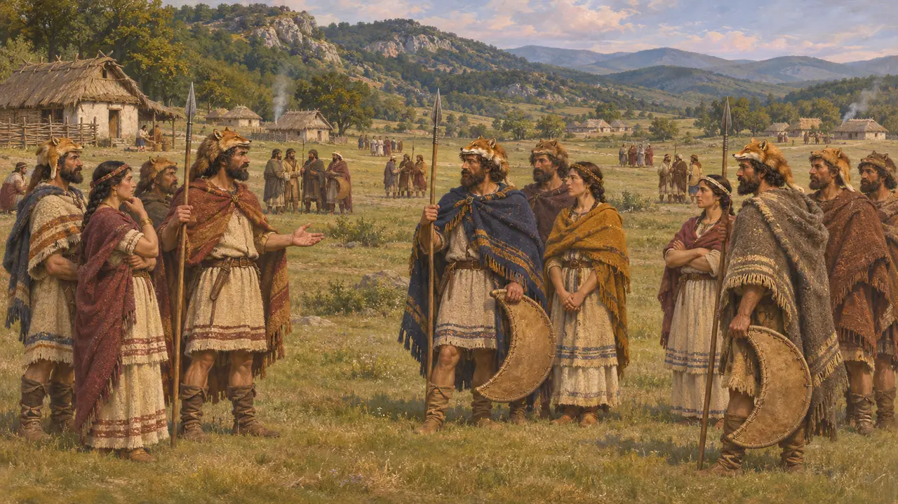
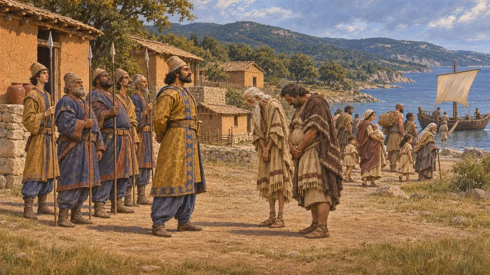
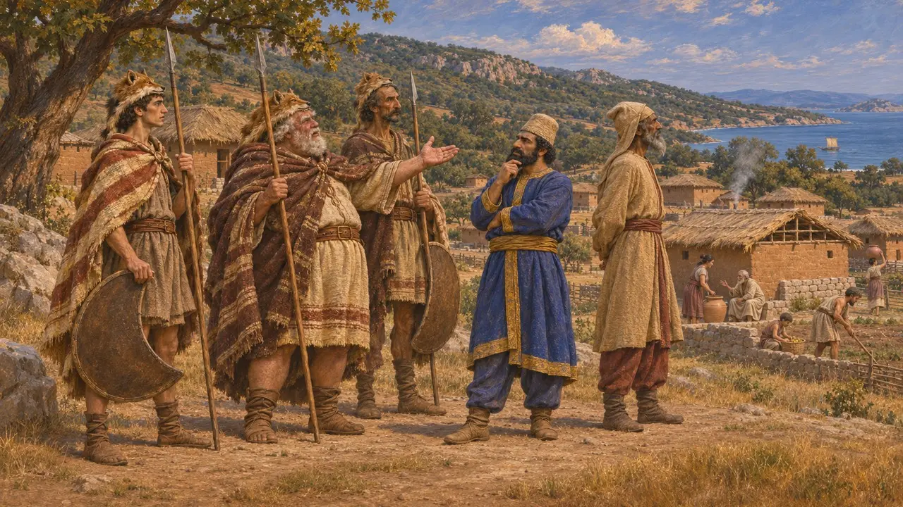
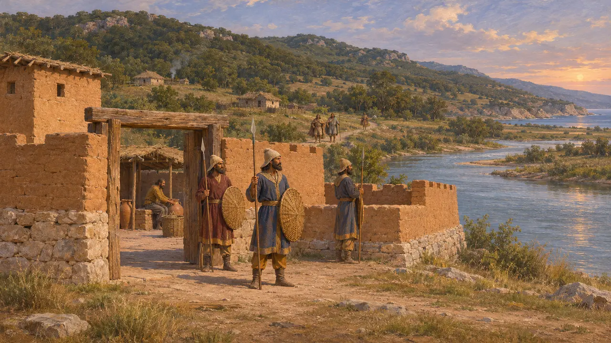
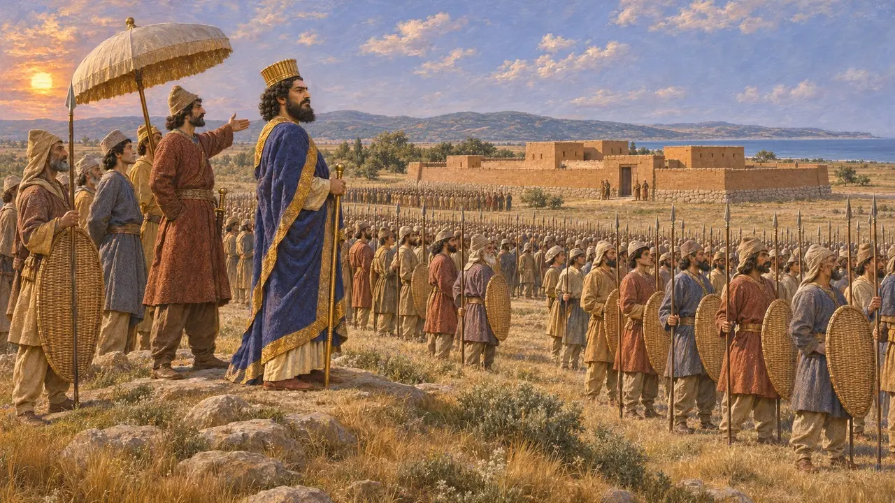

Tracia
Las tierras al norte del Egeo y del Helesponto, un punto de apoyo persa en Europa, 513-479 a. e. c.
En el juego: Nivel 6: El Puente de Barcas
Tracia era el país situado al norte del Egeo y del Helesponto, en manos de numerosas tribus. El ejército de Darío la atravesó de camino al Istro hacia el 513 a. e. c., y las guarniciones persas conservaron plazas en su costa hasta después del 479 a. e. c. Le dio a Persia un punto de apoyo en Europa para las campañas posteriores contra Grecia.
En el juego: El juego nombra Tracia en las entradas de la Crónica y en los artículos de sucesos sobre la campaña escita, los getas, Athos y Dorisco. No tiene nivel, edificio ni mecánica propios.

Una tierra de muchas tribus
Relato antiguoHeródoto describe a los tracios como el pueblo más numeroso después de los indios, dividido en muchas tribus con nombres y costumbres distintos. Afirma que serían invencibles si alguna vez se unieran bajo un solo soberano, algo que él consideraba improbable. Esta es la visión que de aquel país tenía un observador griego.
Herodotus 5.3

Megabazo y la conquista
Relato antiguoHeródoto dice que Darío dejó a Megabazo en Europa después de la expedición contra los escitas, y que este sometió la costa de Tracia y a los peonios, algunos de los cuales fueron trasladados a Asia. Heródoto también refiere una embajada persa a Macedonia que pidió tierra y agua. Hasta dónde llegaba el control persa tierra adentro no queda claro en su relato.
Herodotus 5.1-2

Skudra en las listas persas
En los documentosLas inscripciones de Darío enumeran entre los pueblos sometidos una tierra llamada Skudra, y DNa es un ejemplo. Por lo general se entiende que Skudra designa las posesiones persas en Europa, entre ellas Tracia, pero los textos no fijan su extensión exacta.
DNa

Hasta dónde llegaba el dominio persa
En disputaLos historiadores no se ponen de acuerdo sobre cuán firmemente dominaba Persia Tracia. Algunos ven una provincia organizada con guarniciones en lugares como Dorisco y Eyón. Otros ven un dominio laxo de la costa y los valles fluviales, con tribus del interior que pagaban poco o nada. Briant considera que el control era real pero desigual.
P. Briant, From Cyrus to Alexander, 2002

Dorisco y el camino de Jerjes
Relato antiguoHeródoto cuenta que Jerjes pasó revista a su ejército en la llanura de Dorisco en 480 a. e. c., donde ya había una guarnición persa al mando de Mascames. Heródoto dice que Mascames conservó Dorisco después. Tucídides registra que Eyón, en el Estrimón, en poder de una guarnición persa, fue tomada por los atenienses al mando de Cimón algunos años más tarde.
Herodotus 7.59, 7.105-106; Thucydides 1.98
Fuentes
- Herodotus 5.1-2
- Herodotus 7.59
- Herodotus 7.105-106
- DNa
- Thucydides 1.98
- P. Briant, From Cyrus to Alexander, 2002